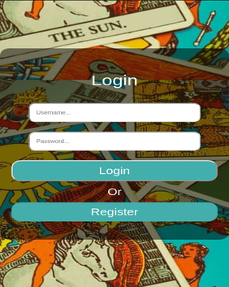

The Tarot Card app was a personal project I created for my wife. I started with creating
a Rest API in Node.js with express. I used knex.js to create migrations and set my initial seed data and PostgreSQL
for my database. To handle user authentication I used JSON Web Tokens. In the frontend I used React to create the UI.
Features of this web application are to view tarot cards and their meanings, I then implemented full CRUD operations
on a note section that the user can add their own thoughts about each card and store them for future reference.
During my time as a team lead at Lambda School their was not much time for coding
between meeting with students and peer reviewing their project code, the little time
I did have I spent building Dev Desk. Dev Desk is a Lambda School build week project idea
that I was really interested in, although I never drew Dev Desk during my build weeks I decided
to tackle the project solo. Dev Desk is a stack overflow clone, a web application that a user
can ask a question by topic and get multiple answers, or answer another users question. Future features
that I would like to add to my edition of Dev Desk are the ability for users to connect like facebook, chat functionality,
and a rating system for answers to questions. User connections and chat functionality are features that I implemented in
my labs project Niyon, see above.